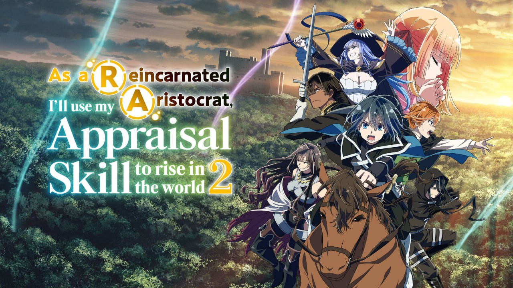

As a Reincarnated Aristocrat - Season 2 Review: War and Strategy
Last updated: 11 October 2026

Season 1 of As a Reincarnated Aristocrat, I'll Use My Appraisal Skill to Rise in the World ended with a mock battle and a promise. Season 2 cashes that promise in - and it turns out the series was never really about appraising people. It was about what you do once you have them.
Season 2 ran from 29 September to 22 December 2024, twelve episodes (numbered 13 to 24), again on the Agaru Anime block and again from Studio Mother. It is a significant step up: bigger stakes, real battle sequences, and the first time Ars is asked to do something he is genuinely bad at.
Quick facts
- Season 2: 12 episodes (13-24 overall), 29 September - 22 December 2024
- Studio: Studio Mother | Director: Takao Kato
- Opening: "Skillawake" by PassCode | Ending: "Familiar" by Yuki Tanaka
- Streaming: Crunchyroll | Genre: Isekai, political fantasy, war
Ratings
- AniPix score: 8.3 / 10
- MyAnimeList: 7.42 (roughly 66,000 users)
- AniList: around 74% | Simkl: 7.4
Season 2 scores meaningfully higher than Season 1 across every community tracker - about 0.27 points on MyAnimeList. That matches what the show actually does: it fixes the pacing problem, it gives Ars real opposition, and it stops treating battles as something that happens off-screen.
Where the story stands
Season 1 ended with the succession crisis unresolved and Ars aligned with Couran Salamakhia, the elder son of the murdered governor. Season 2 opens with that alignment becoming a commitment, and a commitment turning into a war.
The central conflict is between Couran's faction and Vasmarque over the duchy of Missian. Ars is no longer a minor lord protecting a small domain - he is a piece on a much larger board, and the season is largely about him learning how to be useful on that board without getting everyone he cares about killed.
Episode by episode
Episode 13 - Promise
Aired 29 September 2024
War is now on the province. Ars and his retinue return to the trade city of Semplar for Couran's next military conference. Couran's faction is short on ideas, and in the middle of the deadlock Mireille makes a prediction about the coming campaign - then, when Couran asks her for a strategy, she deflects to Rosell instead.
Take: A confident re-entry. The show immediately establishes that Mireille is going to be a problem for everyone, including the people on her own side.
Episode 14 - Negotiation
Aired 6 October 2024
To secure an alliance with Paradille, Ars and his team need Summerforth to mediate. On the road they are joined - uninvited - by Lenge, Couran's son. In the Imperial City they meet Chacma, and Licia's political instincts carry the negotiation right up to the point where an unguarded remark from Lenge ruins it.
Take: The best diplomatic episode of the season. It is also the clearest statement of the show's theme: talent is useless without judgement, and Lenge has none.
Episode 15 - The Image of a Lord
Aired 13 October 2024
Lenge openly disagrees with Ars's methods, and the disagreement comes to a head on the day of the Paradille negotiation. Despite the mess, the talks succeed and Couran secures Paradille - but the celebration does not last, because Couran immediately declares an invasion of Vasmarque's territory. Ars is heading into his first real battle.
Take: The hinge episode. Everything before it is politics; everything after it is war.
Episode 16 - Fort Vakmakro
Aired 20 October 2024
Under Ars and Lumeire, Canarre's army attacks the Vakmakro fortress. Taking it is the only way to reach Castle Samkh and therefore the only way to take the district. The defenders, however, have come up with a strategy nobody anticipated.
Take: The show's first proper siege, and it handles the tactical layer far better than most isekai do.
Episode 17 - Taking Castle Samkh
Aired 3 November 2024
Even after Fort Vakmakro falls, Samkh's forces refuse to yield. Ars and his people work out a plan to take the castle while spilling as little blood as possible - but Rosell has serious doubts about whether it will work.
Take: Ars's defining episode as a commander. He is not trying to win the battle, he is trying to win it without becoming the kind of person who wins battles cheaply.
Episode 18 - Evolution
Aired 10 November 2024
Couran's forces prepare for the next campaign, and Ars is sent to negotiate with one of the defiant enemy leaders. What looks like a straightforward diplomatic errand turns out to have considerably more going on underneath it.
Take: A quieter episode that resets the board and quietly plants the seeds for the back half.
Episode 19 - The Threat of Castle Rolto
Aired 17 November 2024
Ars puts the plan into motion to rescue hostages from Castle Rolto and break the enemy force holding it. The catch is that the plan requires him to be personally exposed, with his own life on the line.
Take: The season's best action episode. It is tense, it is earned, and it puts Ars in genuine danger for the first time.
Episode 20 - Family
Aired 24 November 2024
Ars's side has taken heavy losses and the battle of Castle Rolto is still undecided. The episode narrows its focus onto Lupa and his wife, and whether Couran's forces can actually take the victory.
Take: The emotional peak of the season. The show remembers that wars are fought by people with families, and it makes that land.
Episode 21 - A New Threat
Aired 1 December 2024
Ars sends Pham to report the victory at Castle Rolto to Couran, but the battle at Castle Staatz is only heating up - and Thomas is working on a plan to remove Couran from the board permanently.
Take: A strong pivot. The season shifts from territory to assassination, and the stakes change shape entirely.
Episode 22 - Snowball Fight
Aired 8 December 2024
The armies charge Castle Staatz, where the formidable Braham Joe is waiting specifically to challenge Rietz to a duel. It is the payoff for everything Rietz has been building towards since episode 1.
Take: Exactly what the season needed - the Appraisal premise finally paid off in combat, on the largest scale the show has attempted.
Episode 23 - Allegiance
Aired 15 December 2024
As the battle for the stronghold of Verzud approaches, Thomas reflects on his long rivalry with Mireille. The episode is as much about the two of them as it is about the fortress.
Take: A character episode dressed as a war episode, and better for it.
Episode 24 - Entrusted Feelings
Aired 22 December 2024
The last battle over Verzud reaches its climax, and the aftermath reshapes Ars's life and his reign. The season closes on a genuinely different status quo from the one it opened with.
Take: A strong finale that does what a good second season should: it makes the first season look like a prologue.
What works
Ars is finally challenged. Season 1 gave him a skill and a slow build. Season 2 gives him opposition that his skill cannot solve - Lenge's recklessness, Thomas's assassination plot, Rosell's doubts. He has to grow, not just appraise.
The war is handled with restraint. Battles are won with plans, terrain and negotiation, not power levels. Fort Vakmakro, Castle Samkh and Castle Rolto all feel like distinct problems with distinct solutions.
Rietz gets his moment. The duel against Braham Joe is the payoff the character has been owed since his first appraisal scene, and it delivers.
Mireille is the season's best addition. Ambiguous, competent and never fully trustworthy, she gives the cast a genuinely unpredictable element.
What does not work
Character bloat. The cast grows considerably and not everyone gets enough screen time. Several of Ars's earlier recruits fade into the background as the military plot takes over.
The political threads can get dense. Names, houses and alliances come quickly, and viewers who are not taking notes will lose track of who is fighting whom and why.
The animation is uneven. Studio Mother delivers solid work on the key episodes, but a few mid-season instalments are noticeably thinner.
Verdict
Season 2 is a clear improvement on an already good first season. It takes the premise established in Season 1 - that Ars's only real weapon is other people - and tests it against a war he cannot appraise his way out of. The result is the strongest stretch of the series so far, and the moment this show stopped being "another isekai" and became something worth recommending.
AniPix score: 8.3 / 10 - better paced, better stakes, better payoff. Watch Season 1 first, but this is the season you will remember.
Promotional artwork belongs to its original rights holders and is used here for review and commentary. Sources: Wikipedia season overview; MyAnimeList, AniList and Simkl community scores; Prime Video and Episode Calendar episode synopses. Scores are community-reported and change over time.